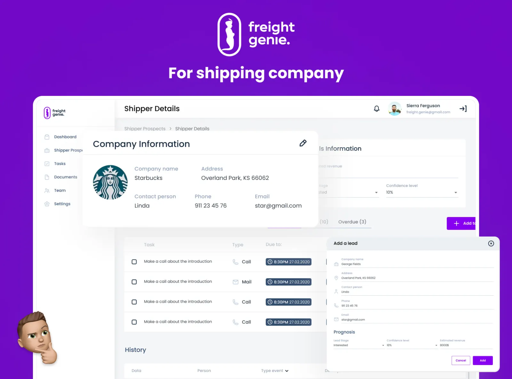

Freight Genie
A multi-role SaaS CRM for the freight logistics industry. Dashboards and complex workflows for dispatchers, drivers and back-office — earned a five-star Upwork review and the language clients still quote back at me in proposals.

A freight CRM that had outgrown its early UI.
The client was scaling a freight management product and ran into a familiar problem — the same screens served too many different roles. Dispatchers needed dense, scannable views; drivers needed a stripped-down, mobile-friendly take; back-office wanted reconciliation and reporting. The original UI tried to be everything to everyone, which meant nobody was happy.
My job was to redesign the SaaS web app around real role flows — and to do it quickly enough to fit a fixed-price Upwork engagement.
Role flows first, screens second.
I started from the workflow side rather than from the screens. For each role I documented the canonical task chain, then asked: what is the smallest interface that supports it?
- Role mappingDispatcher, driver, back-office — entry points, primary actions, data needs.
- Information architectureA navigation model that scaled across roles without forcing one to live inside another’s mental model.
- Dashboard layoutsRole-specific landing screens — KPI cards for back-office, dispatch board for ops, route view for drivers.
- Workflow screensOrder creation, dispatch, status updates, reconciliation — designed as flows, not isolated forms.
- Hand-off packageComponent states, edge cases, empty states and engineering notes ready for the client’s dev team.
Three role-shaped products inside one CRM.
- Dispatcher dashboardLive ops board with high-density data, filterable by status, region and driver.
- Driver viewMobile-first, stripped to the day’s assignments, route details and one-tap status updates.
- Back-office toolsOrder management, reconciliation, reporting and exports — built around batch actions and audit trails.
- Shared component statesEmpty, loading, error and edge states defined for every workflow surface.
A five-star review that became a proposal template.
The client closed the project with a five-star Upwork review — my first one on the platform. The line they wrote back has become the canonical opening I use in proposals for similar briefs.
What I would carry into the next freight CRM.
- Roles, not personasIn logistics SaaS, the role someone holds at a moment matters more than their persona. Design for the role they’re in right now.
- Data density is a featureFor dispatch users, less white space and more visible data is the right answer. Mobile-style spacing is wrong here.
- Status changes are the productThe whole CRM is a state machine. Every workflow screen is just a place where a status transitions.
If you liked this, also see…
Found this through Upwork?
Then you already know where to reach me. Send the brief through your Upwork job post or an invite — I usually reply within a working day.